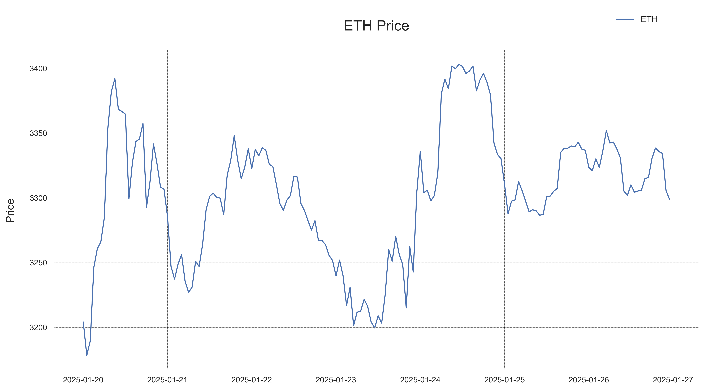

Cryptocurrency Market & Volatility Report
for the Week Ending January 26, 2025
BTC and ETH
The past week has been a rollercoaster for the cryptocurrency market, with significant volatility across major and minor cryptocurrencies.
Market Overview| Asset | Weekly Close | Weekly Range | Weekly Return | Average Daily Trading Range |
|---|---|---|---|---|
| BTC | $104,499 | $100,210 - $108,154 | +3.51% | 3.48% |
| ETH | $3,299 | $3,178 - $3,403 | +2.95% | 3.28% |
- Bitcoin (BTC):
Bitcoin continued its upward trajectory this week, closing at $104,499, marking a 3.51% gain over the past seven days. The flagship cryptocurrency exhibited notable volatility, with prices ranging from a weekly low of $100,210 to a high of $108,154, demonstrating the market's continued dynamic nature.

The week's price action has formed a consolidation pattern above the crucial $100,000 mark, with decreasing volatility as the week progressed. This consolidation, coupled with the positive weekly return, suggests a potentially constructive setup for the coming week, though traders should remain vigilant of broader market conditions and potential catalysts.
While the market shows signs of strength with its ability to hold above key support levels, the proximity to resistance near $106,000 warrants attention. Traders should watch for a potential breakout above this level or a retest of support, with volume patterns likely to provide important confirmatory signals.
- Ethereum (ETH):
Ethereum displayed positive momentum this week, closing at $3,299, registering a 2.95% gain over the seven-day period. The second-largest cryptocurrency moved largely in tandem with Bitcoin, though with slightly lower returns compared to BTC's 3.51% weekly gain.
The week's trading pattern reveals a constructive market structure, with prices maintaining stability above the $3,200 psychological level. The decreasing volatility within the established range suggests a potential energy build-up, which could lead to a directional move once resolved. The high correlation with Bitcoin indicates that broader market sentiment remains a crucial factor for ETH's price action.
The past week has shown interesting developments in the volatility landscape of the two leading cryptocurrencies, with notable divergence in their risk patterns.
- Bitcoin: Bitcoin's volatility profile shows a moderate upward trend over the past week, with the current realized volatility sitting slightly below the weekly average of 57.15%. The relatively tight volatility range suggests stable market conditions, though the upward trend in volatility indicates growing market uncertainty.
- Ethereum Ethereum has experienced a significant decline in realized volatility, currently sitting at its weekly low. This substantial decrease in volatility (-24.66 percentage points) suggests a market that's becoming more orderly, with reduced price swings compared to the beginning of the week.
Key Insight
- Volatility Divergence:: While Bitcoin's volatility has shown a slight increase, Ethereum's has significantly decreased, leading to an unusual situation where ETH's realized volatility is actually lower than BTC's. This is relatively rare historically.
- Risk Regime: : Both assets are currently operating in a moderate volatility environment, with readings well below their respective 95th percentiles (BTC: 60.47%, ETH: 78.93%).
- Market Stability: The contrasting volatility trends between BTC and ETH suggest a potential decoupling in their risk characteristics, which could offer diversification benefits for portfolio management.
Weekly Volatility Table
| Asset | End Of Week Realized Volatility | Weekly Range | Volatility Trend |
|---|---|---|---|
| BTC | 56.68% | 44.83% - 60.55% | +5.92 percentage points (increasing) |
| ETH | 53.65% | 53.65% - 79.31% | -24.66 percentage points (decreasing) |
Risk Outlook
-
The divergent volatility patterns between BTC and ETH suggest we might be entering a period of independent price action. Bitcoin's gradually increasing volatility warrants attention, while Ethereum's declining volatility might present opportunities for volatility trading strategies.
Alternative cryptos
The cryptocurrency market displayed divergent performance patterns over the past week, with significant disparity between major and mid-cap assets. The most dramatic movement came from SUI, recording a 9.22% decline to $3.93, accompanied by substantial volatility as evidenced by its 34.84% trading range. This weakness in SUI was echoed across several mid-cap assets, with Stellar (-6.15%) and HBAR (-5.01%) also experiencing notable downward pressure.In contrast, TRON emerged as the week's standout performer, advancing 3.61% to $0.25 in relatively orderly trading. Chainlink also demonstrated strength with a 1.28% gain, while Solana maintained its recent stability with a modest 0.56% increase to $236.67. The resilience of these larger-cap assets suggests a potential flight to quality within the crypto ecosystem.
The major Layer-1 platforms showed remarkable stability, with BNB nearly flat at $679.13 and Avalanche's modest 2.22% decline to $34.11 occurring in controlled trading conditions. This stability in foundational blockchain platforms contrasts sharply with the volatility seen in smaller-cap assets, potentially indicating a maturing market structure for established protocols.
Stablecoin performance remained exemplary, with both USDT and USDC maintaining tight pegs to the dollar. USDC in particular displayed exceptional stability with a mere 0.05% trading range, providing reliable liquidity for market participants. The liquid staking derivatives market continued to closely track Ethereum's performance, with both stETH and wstETH showing highly correlated price action.
The week's trading patterns suggest an increasingly sophisticated market where volatility and risk are more concentrated in speculative, mid-cap assets while major cryptocurrencies maintain more structured trading ranges. This bifurcation could present both opportunities and challenges for market participants as the ecosystem continues to evolve.